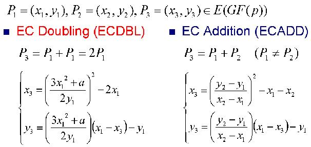
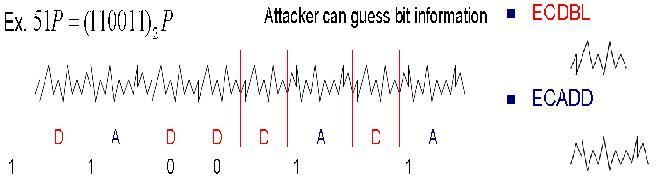
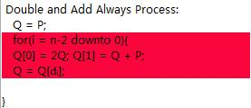

Differential power analysis (DPA) is a more advanced form of power analysis which can allow an attacker to compute the intermediate values within cryptographic computations by statistically analyzing data collected from multiple cryptographic operations.
An elliptic curve can be defined defined by an equation of the form: y2 = x3 + ax + b, GF(p).


GF(p) (e.g. 11): the prime field of EC. All the coordinate values on the curve are the elements of GF(p).
e.g. GF(11) means the prime field group <0,1,2,3,4,5,6,7,8,9,10> and in GF(11) the EC equation y2 = x3 -x + 1 is isomorphic to
y2 = x3 + 10x + 1
a,b: the parameter of EC, the values of a and b should also be set in GF(p), furthermore a and b must satisfy the equation: 4a3 + 27b2 != 0
Infinity point O: group identity, which should be understand as a point at infinity distance far away from the elliptic curve.
Order of Curve: the number of ECpoints on the EC + 1(the infinity point). e.g. for the EC: y2 = x3 + x + 1 in GF(5) there are altogether 8 ECponts on it: (0,1),(0,4),(2,1),(2,4),(3,1),(3,4),(4,3),(4,2) including the infinity point, the order of this EC is 9.
Order k of Point P: the minimum number k in GF(p) which satisfied kP = infinity point, is called order of Point P. e.g. for the Point P = (0,1) on EC y2 = x3 + x + 1 in GF(5), 2P = (4,2), 3P = (2,1), 4P = (3,4), 5P = (3,1), 6P = (2,4), 7P = (4,3), 8P = (0,4), 9P = infinity point, so the order of P(0,1) on this EC is 9.
Encryption Q = kP: Q = kP could be calculated with the formulae EC Doubling and EC Addition: no matter the current bit of binary form of k is "0" or "1", the EC Doubling operation will always be carried out, but if the current bit is "1", an additional EC Adding operation will also be carried out.
Since the private key can be recovered through comparison the difference of power traces between ECAdd and ECDouble operations, the original "Double and Add" algorithm is insecure to both SPA and DPA.

Following is an example to show how the attacker can recover private key through comparison the difference between the power traces of operations:
No matter the current bit is "1" or "0", doubling and addition operation will always be carried out. We just according the current bit to choose Q[0] or Q[1] as the result in next turn.
Although the algorithm "Double and Add always" is resistant to SPA, it is still insecure to DPA. If the attacker uses statistic method, it is not difficult to recover the private key:

With such statistic method called "DPA" we can recover all the other bits of the private key just like the second bit through comparison the statistic testing result with the patterns.
The basic equipments required for DPA are "cryptographic devices"(e.g. Smart Card and Card Reader), "Computer as control device" and "Oscilloscope as test and record device"

There are three basic methods which prevent ECC from DPA attack as following:
If the scalar multiplier k is randomized in each turn of execution, the attacker could not recover the private key per comparison the differences between the power traces analysis of "double and add" operations.
The idea and principal is:
First choose a random factor in group [1,p-1], then a new randomized scalar multiplier k'=k+r*order[P] will be calculated,
since order[P]*P is the infinity point(0) of the chosen elliptic curve, we get:
G'=(k+r*order[P])*P=k*P+r*(oder[P]*P)
=kP+r*0=G
With such method even for the same private key k, the power traces are still ensured to be different. The relation between certain operation and its power
trace will be broken.
If the initial point P is randomized in each turn of execution, it is also difficult to recover the private key through analysis of the correlation between a certain kP and its power trace.
Basic idea and principle:
First we choose randomly an other ECPoint R on the same EC which is different from the initial ECPoint. Then we calculate R+P = P' as the new initial ECPoint
for EC cryptography. After "Double and Add Always" algorithm we get Q' = kP' = k( R + P ) = kR + kP = kR + Q as the result. And for an ECPoint satisfies
S = (x,y) then -S = (x, -y), thus Q = Q' - kR = Q' + (-kR), with this method we can calculate the result Q but concealing the real initial point P.
We use a random isomorphic curve to the original curve, and after "Double and Add always" we recover the original result Q from Q'. The random isomorphic curve could also be understand as a DPA countermeasure with the method of randomizing the initial point P.
Idea and process:
First we choose randomly a number r in prime field [1, p-1], and then we calculate a' = r4a, b' = r6b P' = (r2Xp, r3
Yp). With new a', b', P' we get a new isomorphic curve: E': y2 = x3 + a'x + b' After that we compute Q' = kP' on the new isomorphic curve.
Q' = (Xq', Yq'). Finally we recover Q =(r-2Xq',r-3Yq'). Actually the method "isomorphic curve" breaks the correlation between ECPoint and
power traces of different operations through randomizing the initial point.